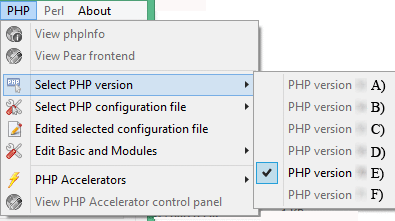
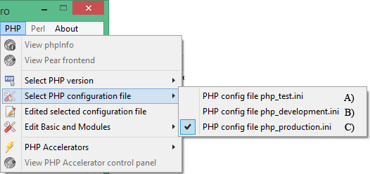
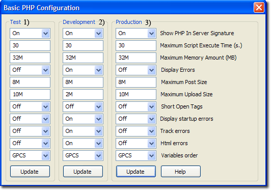
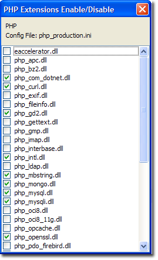
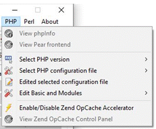
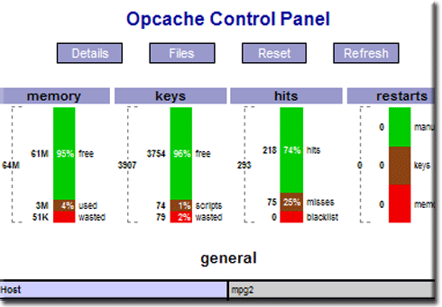

|
|
PHP |
PHP is a general-purpose scripting language designed for creating dynamic web pages. The Apache server uses a PHP processor module to generate the final web page being served. It interprets code embedded into HTML documents. PHP has been pre-configured for test, production and development. A UniController sub-menu allows you to easily switch between the three configurations. This page covers configuration and additional features for maintaining PHP.
Note: A default installation of Uniform Server Zero installs PHP as an Apache module.
View phpInfo
PHP > View phpInfo
This menu button opens a page in the default browser that runs the PHP function phpinfo(), displaying a wealth of information relating to PHP. The page provides very detailed information and a menu splits this into smaller sections, making it easier to read.
- url: http://localhost/us_extra/phpinfo.php - Page displayed
- Location: C:\UniServerZ\home\us_extra\phpinfo.php
PHP Info Menu
- Configuration - Displays PHP Core configuration.
- Environment - PHP current environment.
- Modules - List all modules.
- Extensions - Overview and details (includes functions) for all loaded extensions.
- Variables - List all currently available PHP variables.
- General - Intro information.
Select PHP version
The Uniform Server Zero provides switching between PHP versions 7.x to 8.x. To achieve this, you need to download a suitable PHP plugin for each version.
PHP > Select PHP version
Note: While Apache is running, menu option is disabled (greyed out) to prevent problems.
|
Selection:
Note 1: For the new settings to become effective, you must restart the Apache server. |
 |
Note: For full menu details, see PHP Version Switching page.
Select PHP configuration file
The Uniform Server Zero provides switching between PHP configuration files php_test.ini, php_development.ini and php_production.ini
PHP > Select PHP configuration file
Note: While Apache is running, menu option is disabled (greyed out) to prevent problems.
|
Selection:
Note: For the new settings to become effective, you must restart the Apache server. |
 |
Test Configuration file
PHP > Select PHP configuration file > php_test.ini
Note: In the following, phpxx represents the PHP version selected (covered above).
- File path: UniServerZ\core\phpxx\php_test.ini
- This configuration file is pre-configured and can be modified for testing before making changes to the other two configuration files.
- Note: In a default installation of The Uniform Server Zero, the current configuration is a copy of this file (php_test.ini = php_production.ini).
Development Configuration file
PHP > Select PHP configuration file > php_development.ini
- File path: UniServer\core\phpxx\php_development.ini
- This configuration file is pre-configured for development.
- Note: Errors are displayed in the user's browser and also directed to log file.
Production Configuration file
PHP > Select PHP configuration file > php_production.ini
- File path: UniServerZ\core\phpxx\php_production.ini
- This configuration file is pre-configured for production use.
- Note: Errors are not displayed; these are directed to Apache's log file.
Edit selected configuration file
The following menu allows you to edit the currently selected (covered above) PHP configuration file in Notepad.
Note: While Apache is running, menu option is disabled (greyed out) to prevent problems.
PHP > Edit selected configuration file
- Note: This configuration file is the active configuration. When Apache is started, the contents of this file will configure PHP.
Edit Basic and Modules
Edit Basic Configuration
PHP > Edit Basic and Modules > Edit Basic Configuration
|
This menu item allows you to change commonly configured PHP options.
|
 |
Note 1: After making changes, click the corresponding Update button. This writes the modified data to the associated configuration file.
Note 2: Changes to the current configuration are used next time the servers are started.
Note 3: For test, development and production configuration files to become effective, you need to select the appropriate file and restart Apache.
Note 4: Do not enable Short Open Tags. Doing so will conflict with other languages, such as XML's open tag. For detailed information, see PHP Short Open Tags.
|
PHP Modules Enable/Disable The following sub-menu allows you to enable or disable PHP extensions for the currently selected PHP configuration file: PHP > Edit Basic and Modules > PHP Modules Enable/Disable Note: While Apache is running, menu option is disabled (greyed out) to prevent problems.
Note: After changing state, you must restart the Apache server for the new configuration to be recognized. File modified is the currently selected PHP configuration. Current selected config is shown at the top; for example:
|
 |
Enable/Disable Zend OpCache Accelerator
The Uniform Server Zero provides support for the Zend OpCache PHP Accelerator. The following UniController sub-menu allows you to enable or disable it.
PHP > Enable/Disable Zend OpCache Accelerator
Note: While Apache is running, menu option is disabled (greyed out) to prevent problems.
|
Selection:
Note 1: For the new settings to become effective, you must restart the Apache server. |
 |
View Zend OpCache Control Panel
The Uniform Server Zero provides support for the Zend OpCache PHP accelerator. The following UniController sub-menu allows you to display the accelerator's controller in your default browser.
PHP > View Zend OpCache Control Panel
Note: View Zend OpCache Control Panel menu button greyed out indicates Apache and MySQL not running. The button is enabled when Apache and MySQL are running and PHP is installed.
|
Zend OpCache provides faster PHP execution through opcode caching and optimization. It improves PHP performance by storing precompiled script bytecode in the shared memory. The Uniform Server Zero default installation has Zend OpCache disabled. The Zend OpCache Control Panel is shown on the right. |
 |